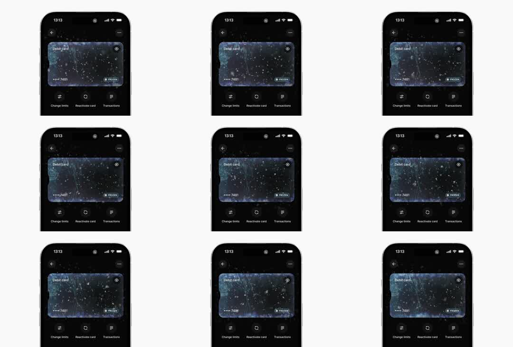

iPhone banking app showing a frozen debit card: the card face is encased in an animated ice/frost texture with falling snow particles drifting across the screen; FROZEN badge, action rows below; ambient loop.
Media
Frame-by-frame

0-100%
Dark app screen 'Debit card' with a frosted card visual: cracked-ice texture, blue-white frost creeping at edges, 'FROZEN' pill badge bottom-right, masked number *7481. Snow particles fall continuously at varying sizes/speeds, some blurred (depth). Below: Change limits / Reactivate card / Transactions icon rows. The loop is purely ambient - particles + subtle frost shimmer, no state change.
Build prompt
Rebuild this interaction 1:1: an iPhone banking screen showing a frozen debit card - the card face is encased in animated ice/frost with snow particles drifting across the whole screen. A FROZEN badge sits on the card; action rows below. Pure ambient loop, no state change.
## Integration
Integration: stack-agnostic spec - springs given as stiffness/damping, timed motions as duration + curve, canvas/shader notes are perf guidance only; map every value to your framework and animation library of choice.
## Scene
Dark app screen "Debit card". Center: card visual with cracked-ice texture, blue-white frost creeping in from the edges, masked number *7481, and a "FROZEN" pill badge bottom-right. Below: action rows - Change limits / Reactivate card / Transactions, each icon + label + chevron.
## Motion spec
Pattern: ambient loop, two independent systems.
- Snow: particles spawn continuously across the width, fall over 3-6s each at varying sizes and speeds; horizontal sine drift (amplitude 10-30px); opacity fades in at spawn and out at the bottom. Vary blur per particle (some sharp, some soft) for depth.
- Frost shimmer: the ice texture's brightness oscillates subtly (+-4%) on a slow ~4s sine - it should read as light moving across ice, not pulsing.
- Nothing else moves. No transitions, no state flips.
## Calibration
- Particle fall 3-6s with mixed sizes (2-6px): uniform snow reads as static noise.
- Drift is sine, not random jitter - snow floats, it does not vibrate.
- Frost shimmer under 5% brightness; if you can point at it, it is too strong.
## Reduced motion
Snow renders as a static scatter of dots; frost texture holds a single frame.
## Don't miss
- Depth comes from per-particle blur and speed differences - near flakes fall faster and softer.
- The frost creeps from the card edges inward; a uniform overlay looks like a photo filter.
- The FROZEN badge is a crisp pill on top of the chaos - the contrast is the point.
Mechanics
trigger
autoplay ambient loop
elements
card with frost texture, particle system (snow), FROZEN badge, action rows